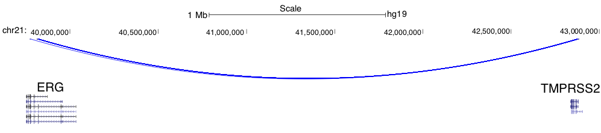
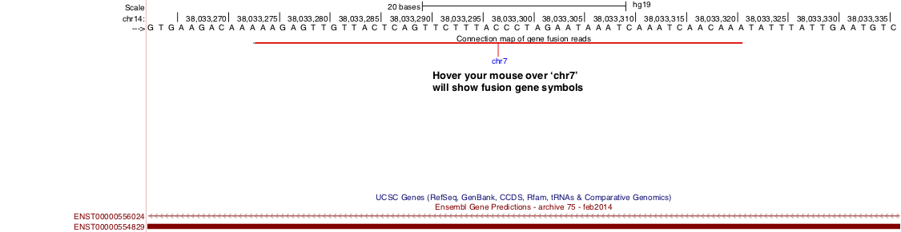

5. Output files¶
FusionVet generates 5 files
prefix.fusion.sorted.bam
prefix.fusion.sorted.bam.bai
prefix.fusion.bed
prefix.fusion.interact.bed
prefix.fusion.summary.txt
5.1. prefix.fusion.sorted.bam¶
BAM file containing the chimeric reads supporting gene fusions. Comparing to the orignal BAM file, two additional tags are added to each alignment record: FN (Fusion Name) and SR (Supporting Read)
SR:i:1 : Fusion was supported by split read
SR:i:2 : Fusion was supported by paired reads
SR:I:3 : Fusion was supported by both split read and paired reads.
$ samtools view out.fusion.sorted.bam | head -10
UNC13-SN749:172:D101FACXX:8:1104:12580:173001/1 99 chr21 39775575 66 48M = 42879910 -3104288 CTTTCACCGCCCACTCCAGCCACTGCCGCACATGGTCTGTACTCCATA CCCFFFFFHHHHHJJJJIIJJIJJJJIJIIJJJJJFHGJGFHIHIJJJ RG:Z:120508_UNC13-SN749_0172_AD101FACXX_8_CGATGT IH:i:1 HI:i:1 NM:i:0 SR:i:2 FN:Z:ERG--TMPRSS2
UNC13-SN749:172:D101FACXX:8:1104:4678:34964/2 163 chr21 39817326 66 48M = 42879890 -3062517 CCTTGAGCCATTCACCTGGCTAGGGTTACATTCCATTTTGATGGTGAC CCCFFFDFHHHHBGHIJJJJJJIIJ?GIIGIJGGGIJJJJJJJJIFDG RG:Z:120508_UNC13-SN749_0172_AD101FACXX_8_CGATGT IH:i:1 HI:i:1 NM:i:0 SR:i:2 FN:Z:ERG--TMPRSS2
UNC13-SN749:172:D101FACXX:8:1208:10044:4367/1 99 chr21 39817340 66 48M = 42880015 -3062628 CCTGGCTAGGGTTACATTCCATTTTGATGGTGACCCTGGCTGGGGGTT CCCFFFFFHHHFFIJJIJJJIIJJJJIIJJHJJJJIJJJIJJJJIJI> RG:Z:120508_UNC13-SN749_0172_AD101FACXX_8_CGATGT IH:i:1 HI:i:1 NM:i:0 SR:i:2 FN:Z:ERG--TMPRSS2
UNC13-SN749:172:D101FACXX:8:1301:12176:174226/2 163 chr21 39817361 66 48M = 42879922 -3062514 TTTTGATGGTGACCCTGGCTGGGGGTTGAGACAGCCAATCCTGCTGAG BCCFFFFFHFHHHJJJJJJJJJJJJFHIIIJJIIJJJJJJJJIJIJJJ RG:Z:120508_UNC13-SN749_0172_AD101FACXX_8_CGATGT IH:i:1 HI:i:1 NM:i:0 SR:i:2 FN:Z:ERG--TMPRSS2
UNC13-SN749:172:D101FACXX:8:2201:10011:20671/1 99 chr21 39817379 66 48M = 42879951 -3062525 CTGGGGGTTGAGACAGCCAATCCTGCTGAGGGACGCGTGGGCTCATCT CCCFFFFDHHHGHJJJJJJJJJJJIIJJJJJJIJIJGHHHFFFDEEEE RG:Z:120508_UNC13-SN749_0172_AD101FACXX_8_CGATGT IH:i:1 HI:i:1 NM:i:0 SR:i:2 FN:Z:ERG--TMPRSS2
UNC13-SN749:172:D101FACXX:8:1108:17583:42031/2 163 chr21 39817384 65 48M = 42880007 -3062576 GGTTGAGACAGCCAATCCTGCTGAGGGACGCGTGGGCTCATCTTGGAA ?@;BDFDABFFDHHAFHHGHIIIJGIIJGIAE?@6;FGH@DDCC@CA# RG:Z:120508_UNC13-SN749_0172_AD101FACXX_8_CGATGT IH:i:1 HI:i:1 NM:i:0 SR:i:2 FN:Z:ERG--TMPRSS2
UNC13-SN749:172:D101FACXX:8:2302:8715:52295/1 99 chr21 39817385 66 48M = 42879932 -3062500 GTTGAGACAGCCAATCCTGCTGAGGGACGCGTGGGCTCATCTTGGAAG CCCFFFFFHHHHHJJJJJHJJJJJJJJJJJJFHIJIIJGIJIJIIJIJ RG:Z:120508_UNC13-SN749_0172_AD101FACXX_8_CGATGT IH:i:1 HI:i:1 NM:i:0 SR:i:2 FN:Z:ERG--TMPRSS2
UNC13-SN749:172:D101FACXX:8:2305:11177:45091/1 99 chr21 39817385 66 48M = 42880014 -3062582 GTTGAGACAGCCAATCCTGCTGAGGGACGCGTGGGCTCATCTTGGAAG B@CFFFFFHHHHHJJJJJJJJJJJJJIJJJJHJJJJJJJJJJJJIJJG RG:Z:120508_UNC13-SN749_0172_AD101FACXX_8_CGATGT IH:i:1 HI:i:1 NM:i:0 SR:i:2 FN:Z:ERG--TMPRSS2
UNC13-SN749:172:D101FACXX:8:2306:12796:14838/2 163 chr21 39817391 53 48M = 42879889 -3062451 ACAGCCAATCCTGCTGAGGGACGCGTGGGCTCATCTTGGAAGTCTGTA @CCFFFFFHHHGHJJJJJJJJJJJJHGIJIJJJJJJJJIIIJHHJ### RG:Z:120508_UNC13-SN749_0172_AD101FACXX_8_CGATGT IH:i:1 HI:i:1 NM:i:1 SR:i:2 FN:Z:ERG--TMPRSS2
UNC13-SN749:172:D101FACXX:8:1308:12672:71749/1 99 chr21 39817394 66 48M = 42880007 -3062566 GCCAATCCTGCTGAGGGACGCGTGGGCTCATCTTGGAAGTCTGTCCAT ?@@FDDDFADF?D@AAB?ACGAHHEHG@BFHIGHBB=8=88@C=@@CE RG:Z:120508_UNC13-SN749_0172_AD101FACXX_8_CGATGT IH:i:1 HI:i:1 NM:i:0 SR:i:2 FN:Z:ERG--TMPRSS2
5.2. prefix.fusion.sorted.bam.bai¶
The index file of prefix.fusion.sorted.bam
5.3. prefix.fusion.bed¶
This is standard BED12 format file. Paired reads are merged into a single BED entry. This file can be uploaded to UCSC genome browser to visualize intra-chromosomal fusions. This is useful to identify the fusion point.
5.4. prefix.fusion.interact.bed¶
This is Interact format file. This file can be uploaded to UCSC genome browser to visualize both intra-chromosomal and inter-chromosomal fusions.
Intra-chromosomal fusions will be visualized as below (Note the two breaking points on ERG gene). Toggle between full display mode and pack/squish display mode help identify the exact breaking point(s).
{kind=link}
Inter-chromosomal fusions will be visualized as below. Toggle between full display mode and pack/squish display mode help identify the exact breaking point(s).
{kind=link}
5.5. prefix.fusion.summary.txt¶
Report the total number of supporting RNA fragments (split reads + read pairs) for each fusion.